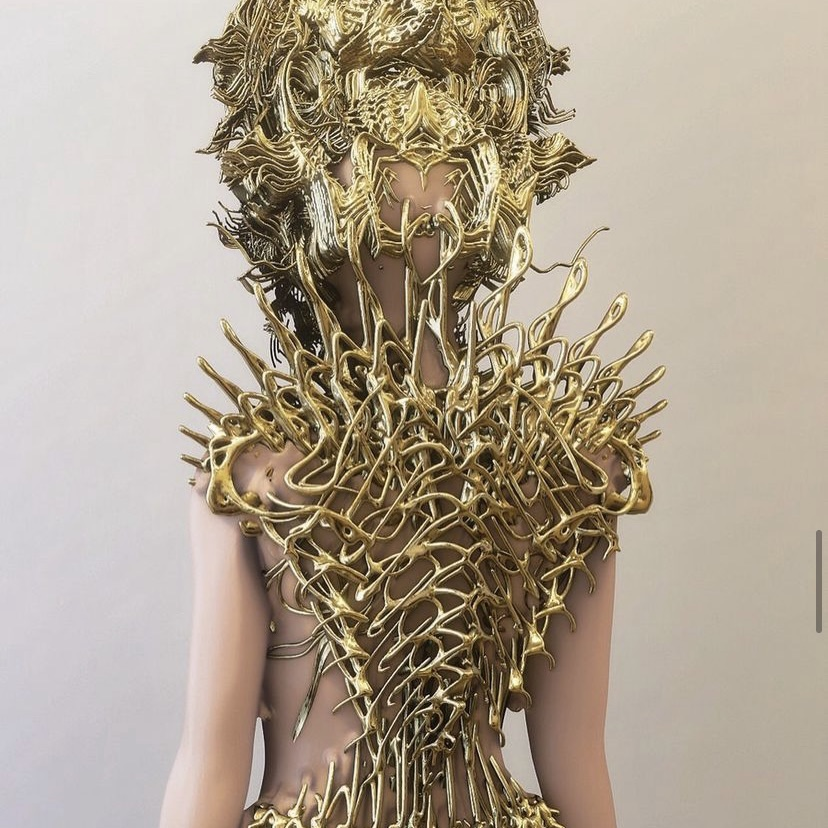
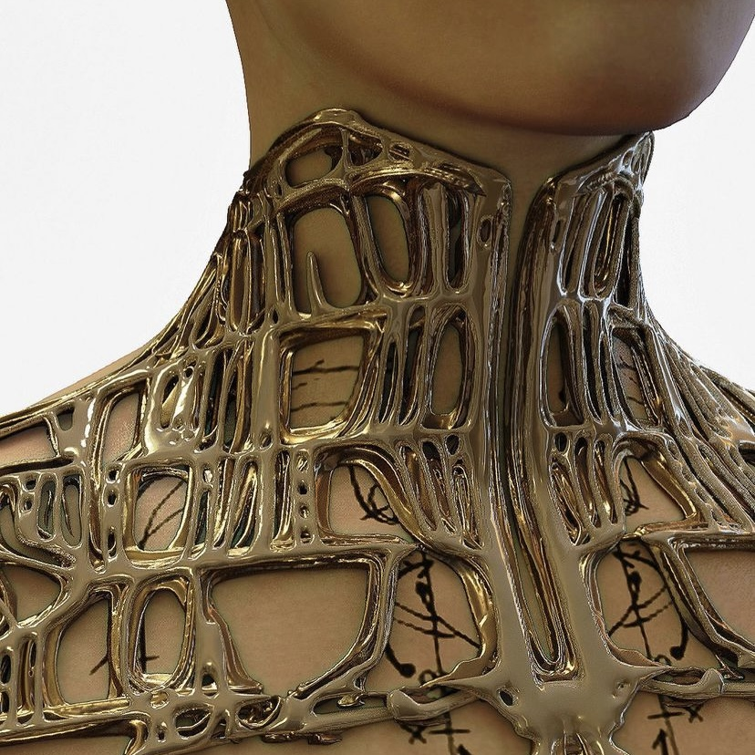

For this assignment, we needed to create a pitch for a final project that incorporates atleast four techniques learned in class.
Concept
I plan to create a jewelry set with an organically geometric alien armor-esque feel. The set will include a choker and ring. These are intended to be costume jewelry for performance, not accessories for daily use.
I'll utilize the following 4 techniques to create the set:
- Rhino (incl modelling, mesh editing)
- Grasshopper (incl parametric design)
- 3D printing
- Incorporating stock parts
Inspiration
Nusi Quero



Iris Van Herpen
Sketches
Word mood board: tentacles, scales, snakes, spines, spikes, skeletons, claws, coral, dragons, warrior goddesses, sweet alien embraces, fire, ice, ivy, victorian, vampires
Resources
I've collected a few Grasshopper tutorials that may be useful once I start the CAD modeling process:
Breakdown of tasks
- Measure body dimensions (neck, fingers)
- CAD modeling with Grasshopper & Rhino
- Slicing with Cura
- 3D printing
Timeline with contingency plans
- By Sat, Dec 3 - Model & print first accessory
- I'll start with the choker, which I'm seeing as the centerpiece of the set
- This model will determine the theme direction of the other items in the set & ideally I'll be able to reuse elements of the GH definition to build their geometry
- If making this model, printing it, or fitting it extends past Sat but still seems feasible as a product, I'll focus on getting this one accessory right & ditch the idea of a set
- If this accessory doesn't seem feasible as a product (i.e. I find that PLA isn't flexible enough to get the choker to stay on regardless of infill settings or model tweaks), I'll focus on making a ring set instead
- By Sun, Dec 4 - Model & print second accessory
- By Mon, Dec 5 - Model & print third accessory
- By Tues, Dec 6 - Photograph final set & document process
Bill of materials with sourcing schedule
- Ender 3 Pro ✓
- PLA Filament: Silver, Black, White ✓